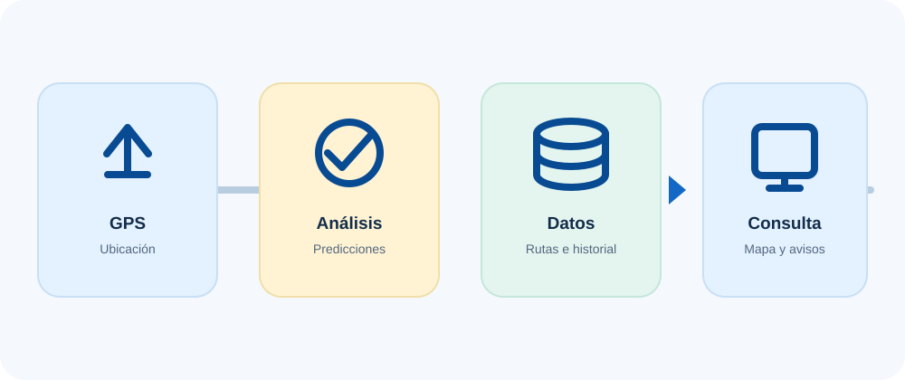

Colonias de hormigas
Imita cómo las hormigas encuentran caminos eficientes. El sistema compara alternativas para proponer recorridos más convenientes.
Cómo funciona
El GPS del celular del chofer envía la ubicación de la unidad. El sistema procesa esa información y datos anteriores para generar estimaciones que se presentan en una interfaz clara.
Tres técnicas de inteligencia artificial
Cada técnica resuelve una tarea distinta. En palabras simples: una ayuda a elegir recorridos, otra estima llegadas y la tercera anticipa la ocupación.
Imita cómo las hormigas encuentran caminos eficientes. El sistema compara alternativas para proponer recorridos más convenientes.
Busca patrones en datos históricos que cambian con el tiempo para estimar cuándo podría llegar el próximo bus.
Aprende de los datos disponibles para calcular una ocupación probable y estimar cuántos puestos pueden quedar.
Arquitectura en cuatro capas
Cada capa cumple una tarea y entrega información a la siguiente. La persona recibe el resultado sin tener que entender el proceso técnico.
El GPS del celular del chofer aporta la posición de la unidad.
Procesa posiciones e información histórica para proponer rutas y hacer predicciones.
Organiza posiciones, rutas, horarios, usuarios y reportes.
Muestra el mapa y las estimaciones a usuarios y gestores.

Herramientas del proyecto
El proyecto se apoya en herramientas gratuitas y abiertas para construir, procesar, almacenar y mostrar la información.
Permite desarrollar la solución con herramientas disponibles para uso y estudio, reduciendo la dependencia de licencias propietarias. La propuesta fue diseñada considerando un entorno con poca infraestructura tecnológica.
Ver la comparación de inversión